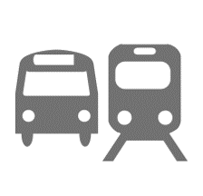
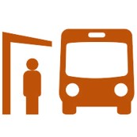
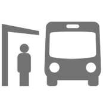

Tampa Bay Regional Activity-Based Model (TBRABM) Statistics - 2015 Transit Ridership Map
Transit Ridership
Transit Ridership by Route
Route Name:
 Mode:
Owner:
Peak Hour Headway (Min):
Off-Peak Hour Headway (Min):
 Peak Hour Ridership:
 Off-Peak Hour Ridership:
Daily Total Ridership:
 Daily Total Ridership:
Daily Total Ridership: